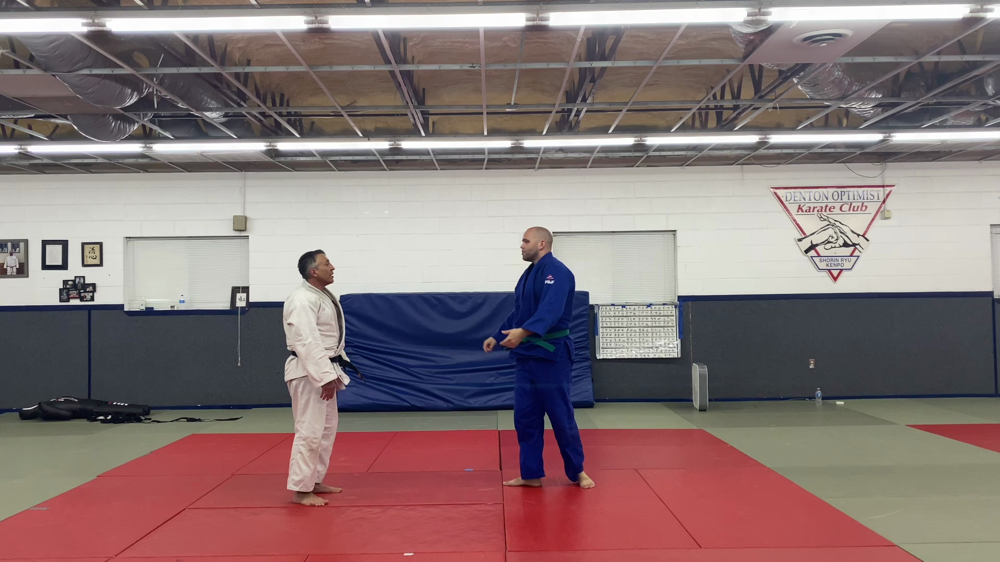
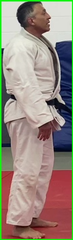
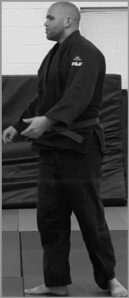
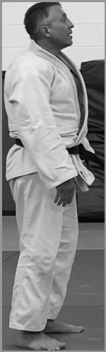

Table of Contents
1. 01 - Detecting Judoka
Now that I've had some time to think about what all is necessary, the first step should not be detecting the mat, but detecting the judoka (a person who practices judo). This is for three important reasons.
- It's the most interesting part
- I want to do it first
- It's my project.
A quick note that as we get into the actual implementation of this, there will be more and more code used, and these code snippets are intended to give a glimpse of the process, not the full source code. Any examples presented within are not guaranteed to work, yadda yadda yadda, and so on.
Finally, we step into the fray.
1.1. Not Reinventing the Wheel
I could absolutely build an entire neural network and pose estimation library myself, but that would be a huge waste of time and I'd never get anything off the ground.
There is a very well established open source library called yolov8 which has built in pose recognition into it. This library is well used for object and face detection, and is very fast. This'll be helpful, as all of my development will be happening on a Mac Studio, which only supports CPU processing, and I'll have to do without the speed granted by GPU processing.
1.2. Person Detection
Take the following example video of myself being thrown with koshi guruma.
Lets see what we can do about detecting the two judoka in the first frame of this video, for starters. Videos are just a bunch of pictures in a row, so if we can't do it on one frame, we can't do it at all.
First we'll use opencv to grab the first frame for testing purposes.
import cv2 vidcap = cv2.VideoCapture("") success, image = vidcap.read() if success: cv2.imwrite("first_frame.jpg", image)
Returns this frame:

Beautiful. Alright, first we need to use the pretrained yolov8n-pose model to detect the individuals (myself in blue, and my friend and training partner Oscar in white) in this frame. We'll store the first frame in a .jpg file and then convert the image into a blob our model can read. After doing that, we can set the blob as the input to our model, and generate predictions from it.
image = cv2.imread(first_frame_path) blob = cv2.dnn.blobFromImage(image, 1/255.0, (INPUT_WIDTH, INPUT_HEIGHT), swapRB=True, crop=False) net.setInput(blob) output = net.forward() preds = output.transpose((0,2,1)) rows = preds[0].shape[0]
Then we'll need to parse these rows to populate lists of conf (confidence, or how sure the model is that a person is there), and box values (the boundaries of the detection). I've extracted this into a seperate method for future use.
def parseRows(rows, shape): confs, boxes = list(),list() image_height, image_width, _ = shape x_factor = image_width / INPUT_WIDTH y_factor = image_height / INPUT_HEIGHT for i in range(rows): row = preds[0][i] conf = row[4] classes_score = row[4:] _,_,_, max_idx = cv2.minMaxLoc(classes_score) class_id = max_idx[1] if (classes_score[class_id] > .25): class_ids.append(label) # get boxes x,y,w,h = row[0].item(), row[1].item(), row[2].item(), row[3].item() left = int((x - 0.5 * w) * x_factor) top = int((y - 0.5 * h) * y_factor) width = int(w * x_factor) height = int(h * y_factor) box = np.array([left, top, width, height]) boxes.append(box) return confs, boxes
For each of these we'll need to generate a way to store the position of each person for future use. Luckily opencv has a way to perform non-maximum suppression using boxes and scores. Now we can draw where on the image a person was detected.
confs, boxes = parseRows(rows, image.shape) indexes = cv2.dnn.NMSBoxes(boxes, confs, 0.25, 0.45) found_people = [ [ boxes[i][0], # left boxes[i][1], # top boxes[i][2], # width boxes[i][3], # height confs[i], # conf GI_COLOR.UNKNOWN # Initial GI color ] for i in indexes ] # Draw rectangles on the image for person in found_people: left, top, width, height, _, _ = person cv2.rectangle(image, (left, top), (left + width, top + height), (0, 255, 0), 3)
Now we'll end up with the following image (cropped for presentation).

1.3. Discerning Identity
In competitive judo, there is usually one judoka in a blue gi, and one in a white. There are other uniform rules where both will wear white, with either a blue or a white belt, or a white and a red belt, but those formats will be ignored for initial MVP. On the IJF Tour and the Olympics, one competitor wears blue and one wears white, so that's what we'll be using for our project.
But how can we know who is who? Judo is a sport built around movement and off-balancing of your opponent. Both competitors would frequently change sides of the video feed, pass in front of and behind each other, and change their height by bending/squatting/being thrown/etc, so there is no other way we can really discern who is who without detecting the color of the gi.
We can take each boundary box, and crop to those pixel locations, and create smaller images to perform our operations on.
def getCroppedPlayerArea(image, player): return image[player[1]:player[1]+player[3], player[0]:player[0]+player[2]] for found in found_people: # create a crop based on the pixel location to look at player_area=getCroppedPlayerArea(image,found) cv2.imwrite(f"./{found[0]}-unaltered.jpg", player_area)
Here is the result of cropping the image to just Oscar to show what I mean.

Once we have this unaltered crop, we can convert it grayscale and determine the gi color based on the amount of lighter pixels present. This isn't a very elegant way to do this, as it takes in the background and the skin color of the individual into account, and a good optimization for accuracy would have the image cropped to only show the gi, but that is a job for future me.
def getGiColor(grayscale_image): return GI_COLOR.WHITE if (np.sum(grayscale >= 127) > np.sum(grayscale <= 127)) else GI_COLOR.BLUE for found in found_people: # create a crop based on the pixel location to look at player_area=getCroppedPlayerArea(image,found) cv2.imwrite(f"./{found[0]}-unaltered.jpg", player_area) grayscale = cv2.cvtColor(player_area, cv2.COLOR_BGR2GRAY) found[5] = getGiColor(grayscale) print(f"Found player with {found[5]}") cv2.imwrite(f"./{found[5]}.jpg", grayscale)
1.3.1. BLUE
This cropped grayscale image has a total of 24416 / 8653701 total pixels greater than 127, and 87404 / 8653701 characters less than 127, so it's more dark than it is bright. This means it must be our blue gi.

1.3.2. WHITE
This cropped grayscale image has a total of 44877 / 10441142 total pixels greater than 127, and 29431 / 10441142 characters less than 127, so it's more bright than it is dark. This means it must be our white gi.

# results in: Found player with GI_COLOR.BLUE Found player with GI_COLOR.WHITE
And now we can tell who is who! Oscar is in white, and I am in blue.
Created: 2024-08-10 Sat 15:25